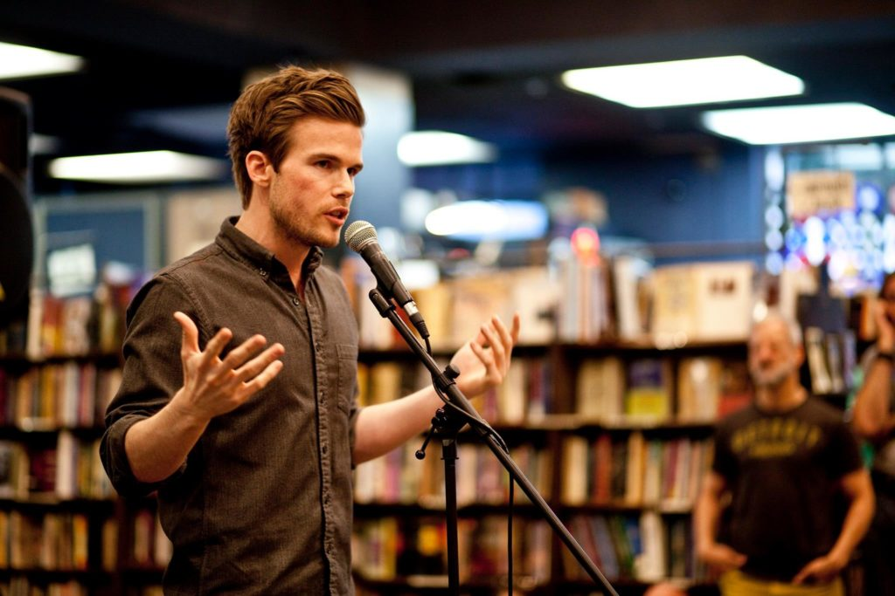
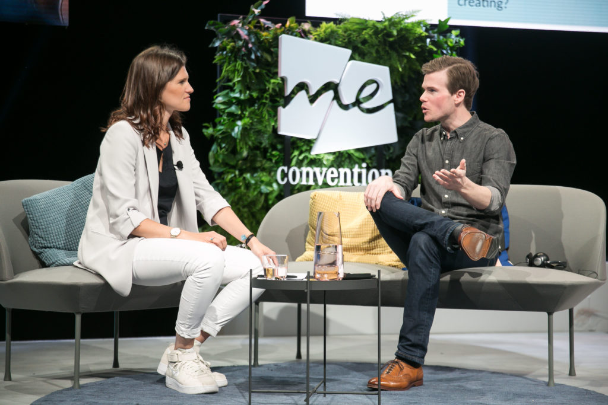
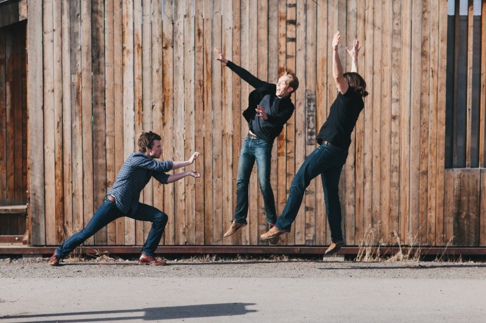

About
Howdy! I'm Colin Wright.
I'm an author, podcast host, and generalist maker-of-things.
I also speak to audiences worldwide at conferences, universities, and on
the periodic national or international tour.
I spend most of my time learning, making things that I hope will be of value,
and striving to grow as a person-in terms of physical and mental health, knowledge,
resiliency, and overall capability.
I've been traveling the world full-time since 2009, and for most of that time I had
my readers vote on what country I would move to next every four months or so.
For the past few years I've experimented with different models, including spending
time in unfamiliar parts of the US, fixing up and full-timing in a vintage RV (while
on tour), and at the moment, researching and visiting potential home bases to use as
jumping-off points for future travels.

Speaking at The Last Bookstore in Los Angeles
Somewhat More Information
I'm originally from Northern California, but I grew up in Columbia, Missouri.
Growing up, I couldn't decide if I wanted to be a chaos theorist (I was better at
back then) or comic book illustrator; I ultimately pursued a combined journalism
and fine arts trajectory in high school.
I worked a handful of design- and technology-related jobs alongside my classes at
university, and wrote news analysis columns for local newspapers.started my first business, a magazine, when I was 19 and still in school. The project
went well, then flopped, which was very painful and educational. I graduated with a
dual-emphasis degree in graphic design and illustration, then moved out toLA to work as a generalist "creative" at a small production and design agency.
After a year, I left the studio job to start up my own one-person operation, at first
doing an array of design, web, animation, and interactive work, before finding a
niche in broader-based branding projects.
Things were going very well, business-wise, when I realized that I was sacrificing
essentially every other aspect of my life to achieve that success.
In 2009, I handed off most of my clients, sold or gave away everything I owned that
wouldn't fit into carry-on luggage, and started up a blog, Exile Lifestyle.
In the years since, I've lived in Argentina, New Zealand, Thailand, Iceland, India,
Romania, Czech Republic, and the Philippines, visited about 60 other countries and
all 48 contiguous US states (twice), roadtripped South America, wandered Southeast
Asia, explored Europe by train, and enjoyed many other travel-related adventures.

Post-talk interview on stage at the SXSW Me Convention in Frankfurt, Germany
Yet More Information
I'm fortunate to have a wonderful family. My parents live in central Missouri
and my three siblings are scattered around the US. I have quite a few fur-
nieces and fur-nephews.
I make friends and build relationships of different kinds as I travel: I have some
truly amazing and inspiring people in my life.
I'm a minimalist in that I own few things and am intentional in how I consume. This
doesn't mean I'm anti-consumption, but rather that I'm careful about how I spend
my time, energy, and resources (including money). I tend to buy less but invest in
quality, and I aim for the same in relationships, the work I do, and everything else.
I'm 35-years-old, left-handed, and cannot believe I get to do what I do for a living.
Visiting the NASA Stennis Space Center in Mississippi
FAQ
If you don't see an answer to your question below, feel free to contact me.
How can I do what you do? Traveling is my dream!
Great! There are many ways to travel long-term or full-time. As many ways as there
are people, in fact.
1. What do you want to get out of travel? What do you hope to achieve by living in this way?
2. How might you earn an income while on the road? What skills do you possess
that might allow you to work independently or remotely, and what skills might you
acquire that would help you do so?
3. What elements of your comfort zone will need to be taken into account when
figuring out expenses, locations, methods of travel, and other such considerations?
Are you comfortable being uncomfortable, or will you need a large cozy bed and a
first class plane ticket everywhere you go? There's nothing wrong with needing such
things, but it's important to be aware of these preferences and needs, as you'll want
to work this information into your plans.
4. It's also important to consider the ethical implications of your travels, including
the emissions created by various travel methods, and the damage that can be caused
by visitors to landmarks, cities, and natural settings. This damage can include
things like the transmission of diseases, but also general wear-and-tear on plants,
paths, and architecture, alongside potential economic recalibrations that can ruin
an area for locals as it becomes more accessible by visitors.
Focus on what's vital, make sure you know why you're doing it, and make sure it's
sustainable: economically, but also psychologically and physically
From there, it's a good idea to set a deadline and to use the time leading up to that
deadline as a runway before take-off. Don't rush, but don't put it off forever, either.
Then go out into the world, try to leave places and people you encounter better than
you found them, and do your best to be present for the experiences you have along
the way.
Do you accept guest posts/submissions for your blog?
Nope, sorry.
Why not?
It's just not how I use this space. Back when I first started blogging I accepted a few,
but not anymore. The blogosphere was a very different creature back then, and so was I.
Can I buy an advertisement on your blog?
Nope, sorry.
Wait, if you don't display ads like a smart business person, how do you make
money from your blog?
The short answer is: I don't.
The longer and more complete answer is: I don't make money directly from my blog,
but it serves as a means of communicating with my audience, who are able to get a
taste for my work, and who may, as a result, decide to pick up one of my books,
attend a conference at which I’m speaking, or support my podcast.
It's a slow-burn means of making a living, but it’s one I feel good about. I wouldn't
be able to say the same if I bombarded folks with marketing messages or
overwhelmed them with blinking ads, promoting widgets they don't need.
Will you come speak at my conference/event/school/business?
Perhaps! Here's some info about hiring me as a speaker and how that all works.
Aren't you a minimalist? Isn't it counter to your philosophy to sell books?
Nope. Being a minimalist doesn't mean owning nothing, it means owning
exactly the right things for one's needs and priorities. It's not about being anti-
consumption, it's about being anti-compulsory consumption
I try to only own things that add value and happiness to my life. There are many
other things I could own that would only weigh me down or consume resources
(time, energy, money) that I could instead spend on truly valuable things ('valuable'
being defined by my needs and priorities).
If a book brings you joy, helps you learn, or exposes you to new ideas, there's a good
chance it passes muster, minimalism-wise. Though that won't be the case for
everyone-if your money is better spent on something else according to your
standards, please do that, instead.
I also encourage folks who buy my books to hand them off to a friend or donate
them to a library afterward, which is a good way to enjoy the benefits of a tangible
book without adding any clutter to your life.
How do I write a book?
The first step is to start writing. A lot.
Many people want to write a book but don’t write, or are afraid to start writing
before they feel they have the entire publishing scaffolding in place.
Don't do that. Don’t wait for permission.
Get started, write all the time. It's the only way to get better, and it's the best
possible way to sound more like yourself and develop your personal style.

Hadoukening Joshua Fields Millburn and Ryan Nicodemus of The Minimalists
Recent Posts
CultivationYeoman's Work
Transience
Repetition & Cessation
Guiding Questions